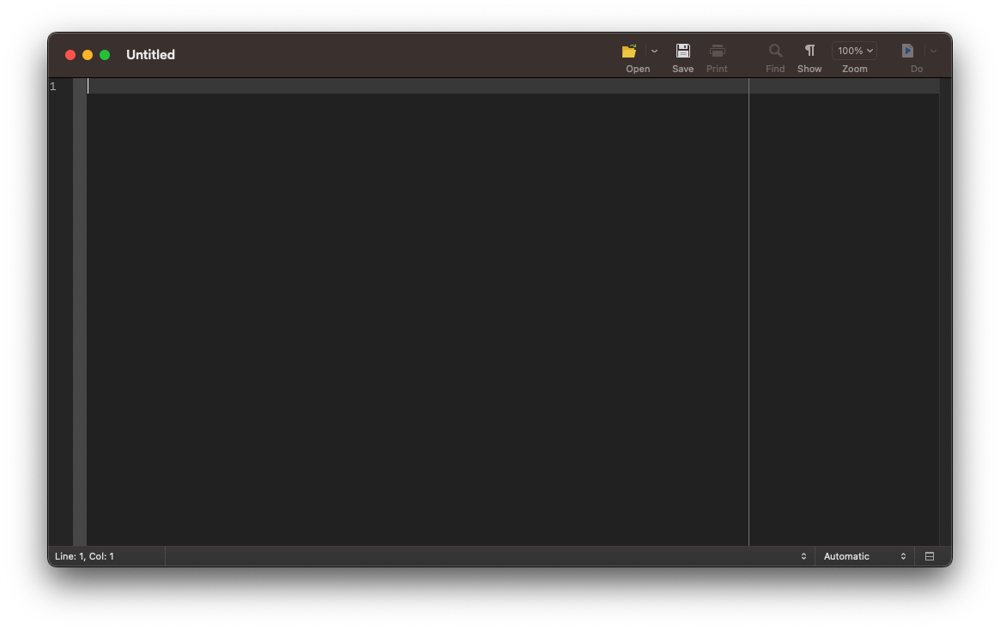
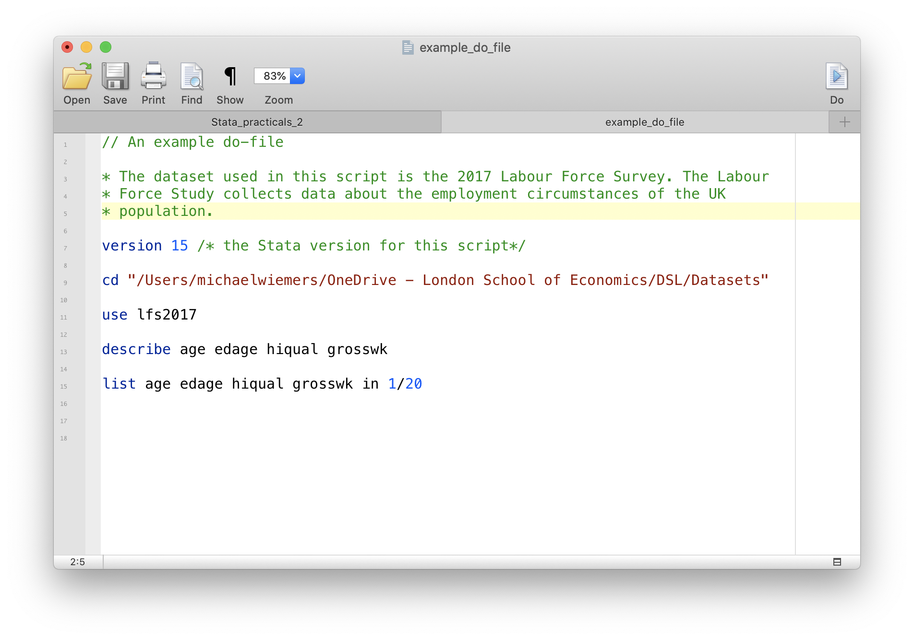

On this page
📋 Starting your session: confidence check
Once your workshop session has started, please complete this short questionnaire before beginning your first project during the workshop you attend today. It helps us understand how confident you feel before the session.
Open the starting confidence check ↗DIGITAL SKILLS LAB · STATA
Stata Fundamentals 2: Do-files and computing variables
A practical guide to writing do-files, creating frequency tables, computing variables and saving your data.
More information on how the session is run
What to do when getting stuck:- Ask the trainer if you struggle to find a solution.
- Use the help command. To get help with a specific command type help "command name"
- Search online. The statalist.org forum is usually the most useful resource.
- use do-files to create analysis scripts
- create frequency tables
- compute new variables
- save datasets
Access to Datasets
Please use this link to get access to the datasets that you will be using in the exercises
Do files
With do-files you can keep a record of your commands in a text file, which makes it easy to re-run commands for pre-processing, plotting and analysing your data. It also provides a means to keep a record of your analysis and to share it with colleagues or to attach it to your dissertation or make it available with your publications.
Just take the first section in which you changed the working directory and loaded a file into Stata as an example. By using a do-file you won’t have to re-type these commands in order to load the dataset the next time you want to work on your analysis.
Create a new do file
To create a new do-file use the shortcut Ctrl+9 (Windows) or Cmd+9 (Mac). A new do-file editor with an empty do-file script will open. To create additional do-files use the Ctrl+N (Windows) or Cmd+N (Mac) shortcut.

Adding comments
Comments, which are always in green, will be ignored by Stata. That means, Stata will not try to execute it as a command. You can use comments to explain what your script does.
In the example do-file below, we use three different types of comments:
- double forward slash //
- asterisk *
- forward slash-asterisk combination /**/
In line 1 the double forward slash is being used to turn the first line into a comment. The // can be used for the title of the do-file or a section title within your do-file.
The other character that can be used to create comments is the asterisk. In line 3-5, the asterisk is used to comment out each line of that three-line paragraph about the dataset.
The forward slash-asterisk combination /**/ can be used within a line to add a comment after a command (see line 7).

Running a do-file
You can use the Ctrl+D (Windows) Cmd+D (Mac) command to run the whole file. To only run a single line or a selection of lines, highlight the lines and then use the Ctrl+D (Windows) or Cmd+D (Mac) shortcut.
Exercise: Do-files
- Create a new do-file to reproduce the commands from the previous session on Inspecting a dataset.
- Add a comment in the first line to describe what your do-file does.
- Copy the commands from the previous exercise into your do-file.
- Run the whole do-file.
- Run only the first three commands.
Creating frequency tables
With the tabulate command, you can create one- and two-way frequency tables. We’re going to start with a simple frequency table for the hiqual variable. The tabulate command can be abbreviated as tab. In this example, we are again working with the lfs2017 dataset.
. use lfs2017, clear
. tab hiqual
Highest qualification |
(detailed grouping) | Freq. Percent Cum.
-------------------------------+-----------------------------------
No answer | 11 0.11 0.11
Degree or equivalent | 3,446 34.13 34.24
Higher education | 982 9.73 43.97
GCE A level or equivalent | 2,312 22.90 66.87
GCSE grades A*-C or equivalent | 2,037 20.18 87.04
Other qualification | 728 7.21 94.26
No qualification | 503 4.98 99.24
Don't know | 77 0.76 100.00
-------------------------------+-----------------------------------
Total | 10,096 100.00
Exercise: Creating frequency tables
There is growing evidence that breastfeeding improves cognitive development of infants. The MCS_testscore dataset contains data on the Foundation Stage Profile scores, which is a teacher assessment of children’s development at the end of reception year, and amongst many other data also data on the months a child has been breastfed. We can use a frequency table to explore whether we can find evidence for a relationship between the length of breastfeeding and the foundation stage profile scores on the descriptive level in this dataset.
- Open the MCS_testscore dataset, which is in the files folder.
- The variables we are interested in are fsp (quartiles for the foundation stage profile score) and mbreastt (length of breastfeeding in months). Create a two-way frequency table that lists the months of breastfeeding in the rows and the fsp score quartiles in the columns.
- Adjust your command to also include percentages for the rows.
- Is the data in line with the notion that breastfeeding improves cognitive development?
Computing variables
Computing a new variable
With the generate command we can compute new variables in our dataset. For instance, we can calculate a new variable for the annual income based on the weekly income which is listed in the grosswk variable.
We can abbreviate the generate command with gen. After gen we specify the name of the new variable for the yearly income as grossyr. After the = sign, we write an expression to calculate the values of the new variable. We multiply the values from the grosswk variable, the weekly income, by 52 to calculate the approximate annual income and assign the calculated values to a new variable called grossyr.
. use lfs2017, clear
. gen grossyr = grosswk*52
We can now use the summarize command to compare the mean and standard deviation of the grosswk and grossyr variables.
. sum grossyr grosswk
Variable | Obs Mean Std. Dev. Min Max
-------------+---------------------------------------------------------
grossyr | 10,096 27131.9 27189.54 260 1199952
grosswk | 10,096 521.7672 522.8757 5 23076
Replacing a variable
The replace command enables you to overwrite an existing variable in your dataset. As an illustration, let us replace the values of the newly created grossyr variable, using the same expression we used to create the grossyr variable.
. replace grossyr = grosswk*52
(0 real changes made)
Since we used the same formula, the values in grossyr haven’t effectively changed.
. sum grossyr grosswk
Variable | Obs Mean Std. Dev. Min Max
-------------+---------------------------------------------------------
grossyr | 10,096 27131.9 27189.54 260 1199952
grosswk | 10,096 521.7672 522.8757 5 23076
Exercise: Computing variables
The auto dataset lists the turn circle, which is the radius of the smallest circular turn a car can make. To determine in how far the turn circle depends on a car’s length, we want to calculate the ratio of the turn circle and the length.
- Open the auto dataset using the
webusecommand - Convert the length variable, which lists the length of a car in inches, to feet (12 inch = 1 ft). Overwrite the length variable.
- Calculate a new variable TLrat as the ratio of the turn circle and the length in feet.
- Print the mean and standard deviation of the new variable.
Saving data
Saving as new file and replacing files
We have now added a new variable to our dataset, the grossyr variable. With the save command we can save changes we made to our dataset. If you want to save the dataset under a new name, you have to specify the new file name following save. With the added replace option, we instruct Stata to overwrite an existing version of the data.
use lfs2017, clear
save lfs2017b, replace
Exercise: Saving data
- Save the lfs2017 dataset under the new name lfs2017_raw.
- The grosswk variable lists the weekly income in Pound Sterling. Create a new variable for the weekly income in USD. The conversion is 1 GBP = 1.24 USD.
- Save the dataset with the newly calculated variable under lfs2017.
📋 Leaving your session: confidence check
Please complete this short questionnaire just before you leave the workshop session. It helps us understand how confident you feel after the session. Continuing to another project in this session? Skip this questionnaire and complete the ending questionnaire only before leaving.
Open the leaving confidence check ↗